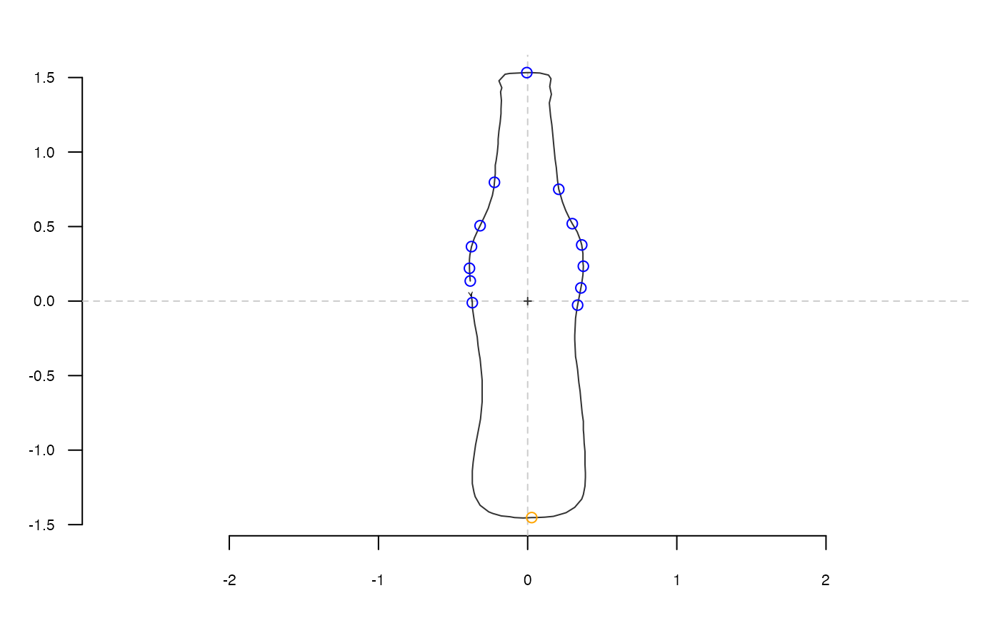

Nearest intersection between a shape and a segment specified with an angle
Source:R/coo-utilities.R
coo_intersect_angle.RdTake a shape, and segment starting on the centroid and having a particular angle, which point is the nearest where the segment intersects with the shape?
Usage
coo_intersect_angle(coo, angle = 0)
coo_intersect_direction(coo, direction = c("down", "left", "up", "right")[4])
# Default S3 method
coo_intersect_direction(coo, direction = c("down", "left", "up", "right")[4])
# S3 method for class 'Coo'
coo_intersect_direction(coo, direction = c("down", "left", "up", "right")[4])Arguments
- coo
matrixof(x; y)coordinates or any Coo object.- angle
numerican angle in radians (0 by default).- direction
characterone of"down", "left", "up", "right"("right" by default)
Note
shapes are always centered before this operation. If you need a simple
direction such as (down, left, up, right)ward, then use coo_intersect_direction which
does not need to find an intersection but relies on coordinates and is about 1000.
See also
Other coo_ intersect:
coo_intersect_segment()
Examples
coo <- bot[1] %>% coo_center %>% coo_scale
coo_plot(coo)
coo %>% coo_intersect_angle(pi/7) %>%
coo[., , drop=FALSE] %>% points(col="red")
# many angles
coo_plot(coo)
sapply(seq(0, pi, pi/12),
function(x) coo %>% coo_intersect_angle(x)) -> ids
coo[ids, ] %>% points(col="blue")
coo %>%
coo_intersect_direction("down") %>%
coo[.,, drop=FALSE] %>% points(col="orange")
